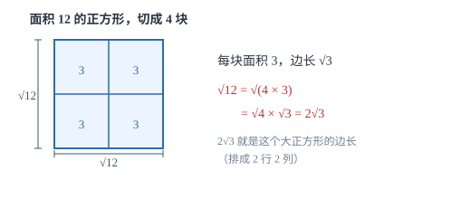

二次根式
根号问的是「哪个非负数的平方等于它」；化简的本质是把被开方数里的平方因数搬到根号外面。
| 所属主题 | 数与式 |
|---|---|
| 所属模块 | 代数 |
| 课标学段 | 第四学段（7~9 年级） |
| 前置知识 | 实数及其运算、因式分解 |
| 核心素养 | 运算能力抽象能力 |
教材定位
人民教育出版社《人教版（2024版）义务教育教科书·数学》
八年级下册第19章 二次根式19.1 二次根式及其性质19.2 二次根式的乘法与除法19.3 二次根式的加法与减法
对应八下 19.1~19.3。本篇在此基础上补讲分母有理化与绝对值的处理。
说明
形如 \sqrta\ (a≥ 0) 的式子叫二次根式。它有双重非负性：被开方数 a≥ 0，并且 \sqrta≥ 0 本身也非负。这两条限制决定了二次根式题的第一句话通常是「先看取值范围」。由定义直接得到 ≤ft(\sqrta)^2=a；而 \sqrta^2 的结果是 |a| 而不是 a，因为开方结果必须非负。
化简的目标是化成最简二次根式，标准有两条：被开方数不含分母，被开方数不含能开得尽方的因数或因式。化简的依据是 \sqrtab=\sqrta\cdot\sqrtb\ (a≥ 0,\ b≥ 0) 与 \sqrta/b=\dfrac\sqrta\sqrtb\ (a≥ 0,\ b>0)。化简后如果几个根式的被开方数相同，它们叫同类二次根式，可以像合并同类项那样合并：2\sqrt3+5\sqrt3=7\sqrt3。
使用场景
当题目用勾股定理求边长（提前借用后面 直角三角形与勾股定理 的内容）、或解一元二次方程用求根公式时，结果往往是二次根式，必须化简到最简形式才算答完。例如直角边为 2 和 2\sqrt2，斜边是 \sqrt4+8=\sqrt12=2\sqrt3；一元二次方程的根 \dfrac-2±\sqrt122 要整理成 -1±\sqrt3。
当题目要求比较两个根式的大小、或估算一个根式在哪两个整数之间时，先把根号外的因数移到根号内（或反过来），再比较被开方数。例如比较 3\sqrt2 与 2\sqrt5：3\sqrt2=\sqrt18，2\sqrt5=\sqrt20，后者大。估算 \sqrt20 时看 16<20<25，得 4<\sqrt20<5。
注意点
\sqrta+\sqrtb≠\sqrta+b。根号不能「分配」到加法上：\sqrt9+\sqrt16=3+4=7，而 \sqrt9+16=\sqrt25=5，两者不等。只有当两个根式是同类二次根式时才能合并，且合并的是根号外的系数。
\sqrta^2=|a|，不是 a。当 a<0 时 \sqrta^2=-a。例如 \sqrt(-3)^2=\sqrt9=3=-(-3)。这条符号处理是二次根式与绝对值两章的交汇点，也是压轴题里最常设的陷阱。
证明

图 1：\sqrt12 的化简可以看成把面积 12 的正方形按 2× 2 切成 4 块，每块面积 3、边长 \sqrt3
证明
结论 1当 a≥ 0、b≥ 0 时，\sqrtab=\sqrta\cdot\sqrtb。
为什么 \sqrtab=\sqrta\cdot\sqrtb 成立：当 a≥ 0、b≥ 0 时，等式两边都非负；把两边分别平方，左边平方得 ab，右边平方得 ≤ft(\sqrta)^2≤ft(\sqrtb)^2=ab。两个非负数平方相等，它们本身必然相等。
关键一步依据是平方根的定义与「两个非负数平方相等则本身相等」：算术平方根是非负数，所以先由 a≥ 0、b≥ 0 锁定两边非负，再用平方还原比较。这个「非负」的条件不能丢，否则结论不成立。
结论 2化简根式的办法：把被开方数写成「完全平方因数 × 剩下的因数」，再把完全平方因数开出来。
由此得到化简的办法：把被开方数写成「完全平方因数 × 剩下的因数」，再把完全平方因数开出来。例如 \sqrt12=\sqrt4× 3=\sqrt4\cdot\sqrt3=2\sqrt3。为什么要找完全平方因数？因为只有平方数才能干净地开出根号，其余部分留在根号里。
关键一步依据是上一条的积开方公式：12=4× 3 中 4 是完全平方数，\sqrt4=2 可以整体开出来；3 不是完全平方数，\sqrt3 必须留在根号内——只有完全平方因数才能「开出根号」，所以化简时先找它。
结论 3\sqrt12=2\sqrt3 的几何含义：面积 12 的正方形能整齐地切成 4 块边长 \sqrt3 的小正方形。
面积解释（图 1）：12=4× 3，其中 4 是完全平方数，说明面积 12 的正方形能整齐地切成 4 块一样大的正方形（每边两块）。每块面积是 3，边长就是 \sqrt3；大正方形每边占两块，所以边长是 2\sqrt3。数值上 2\sqrt3\approx 2× 1.732=3.464，而 \sqrt12\approx 3.464，一致。这就是化简的几何含义：完全平方因数决定「能切成几块、每边几块」，剩下开不尽的因数留在根号里，决定每块的大小。
关键一步依据是正方形面积的两种算法：整块边长 =\sqrt12，切成 4 块后每块面积 3、边长 \sqrt3，每边两块得 2\sqrt3；两种数法必须相等，这正是化简结果的来源，数值检验 3.464 与 3.464 也印证了这一点。
结论 4分母有理化不改变式子的值，它的作用是把分母从无理数变成有理数。
分母有理化为什么有效：\dfrac1\sqrt3 的分子分母同乘 \sqrt3，得 \dfrac\sqrt33，值不变（同乘同一个非零数），但分母从无理数变成了有理数，便于后续加减与比较。遇到 \dfrac1\sqrta+\sqrtb，则同乘 \sqrta-\sqrtb，利用平方差把分母化成 a-b。
关键一步依据是分式基本性质（同乘同一个非零整式，值不变，此处 \sqrt3≠ 0）与平方差公式：(\sqrta+\sqrtb)(\sqrta-\sqrtb)=a-b，所以同乘 \sqrta-\sqrtb 能把根式分母化成有理数 a-b，化简才能继续进行。
动手实验
取 a=2、b=8 验证乘法法则：\sqrt2× 8=\sqrt16=4，而 \sqrt2×\sqrt8\approx 1.414× 2.828=4.000，一致。再试 a=-2、b=-8：\sqrt(-2)×(-8)=\sqrt16=4，但 \sqrt-2 在实数范围内不存在，法则失效。可见 a≥ 0、b≥ 0 的条件不能省。
解题思路
化简二次根式走三步：第一步把被开方数分解因数（或分解因式），找出最大的完全平方因数；第二步把这个平方因数开方后移到根号外，系数与系数相乘；第三步检查是否还有分母、是否还能再开，直到满足最简的两条标准。若根号外有系数，先算系数再算根式：3\sqrt8=3× 2\sqrt2=6\sqrt2。
二次根式的加减只有一条规则：先化简，再合并同类二次根式。不化简直接加减是最常见的错误，例如 \sqrt8+\sqrt18 看上去不同类，化简后是 2\sqrt2+3\sqrt2=5\sqrt2。乘除则直接用法则：根号内外分别相乘除，最后化简。
分母有理化分两类。分母是单个根式 \sqrta 时，分子分母同乘 \sqrta，得 \dfrac\sqrtaa。分母是 \sqrta±\sqrtb 时，同乘它的共轭 \sqrta\mp\sqrtb，用平方差把分母化成 a-b。乘完记得把分子整理、能约分的约分。
按场景的例题
例 1（场景：测量与工程） 正方形花圃的边长估算
一个正方形花圃的面积是 12 平方米，它的边长是多少米？边长在哪两个相邻整数米之间？
解：设边长为 x，则 x^2=12，x=\sqrt12（取正值）。化简：\sqrt12=\sqrt4× 3=2\sqrt3。估算：3^2=9<12<16=4^2，所以 3<\sqrt12<4。用近似值核对 2\sqrt3\approx 2× 1.732=3.464，确实在 3 与 4 之间。
答：边长 2\sqrt3 米（约 3.46 米），在 3 米与 4 米之间。
例 2（场景：图形设计） 三角形边框的周长计算
一个三角形的三边长分别是 \sqrt8、\sqrt18、\sqrt32 厘米，求它的周长。
解：先各自化简：\sqrt8=2\sqrt2，\sqrt18=3\sqrt2，\sqrt32=4\sqrt2。三者被开方数都是 2，是同类二次根式，可以合并：2\sqrt2+3\sqrt2+4\sqrt2=9\sqrt2。核对近似值：2.828+4.243+5.657=12.728，而 9× 1.414=12.726，一致。
答：周长是 9\sqrt2 厘米（约 12.73 厘米）。
例 3（场景：物理情境） 自由落体下落时间的计算
自由落体运动中，下落高度 h（米）与时间 t（秒）满足 h=5t^2。一个物体从 45 米高处落下，落地需要多少秒？若从 20 米高处落下呢？
解：由 h=5t^2 得 t^2=h/5，t=\sqrth/5（取正值）。h=45 时 t=\sqrt9=3；h=20 时 t=\sqrt4=2。若高度是 30 米，则 t=\sqrt6\approx 2.45 秒，此时结果开不尽，保留根号或取近似值。
答：从 45 米落下需 3 秒；从 20 米落下需 2 秒。
常用推论
由 ≤ft(\sqrta+\sqrtb)≤ft(\sqrta-\sqrtb)=a-b 可得 \dfrac1\sqrta+\sqrtb=\dfrac\sqrta-\sqrtba-b。这条推论把分母里的两个根式变成一个有理数，是分母有理化的标准动作。
若 \sqrta-3+|b+2|=0，由于两个非负数之和为零只能各自为零，得 a-3=0、b+2=0，即 a=3、b=-2。这类「非负数之和为零」的组合还有 |x|+y^2=0、\sqrtx+\sqrty=0。
当 0<a<1 时，a<\sqrta<1，且 1/a>\sqrt1/a。例如 a=1/4：\sqrta=1/2，比 a 大；而 1/a=4，\sqrt4=2，比 4 小。判断带根式的大小关系时，先看这个数在 0 到 1 之间还是大于 1。
易错点
错\sqrt16=± 4
为什么错把算术平方根与平方根混为一谈。根号 \sqrt\ 这个符号本身只表示非负的那一个平方根。
正确\sqrt16=4。若问「16 的平方根」，答案才是 ± 4。
错\sqrt2+\sqrt3=\sqrt5
为什么错把根号当成可以分配到加法上的运算。用近似值一算就露馅：1.414+1.732=3.146，而 \sqrt5\approx 2.236。
正确\sqrt2+\sqrt3 不是同类二次根式，无法合并，只能保留原式或取近似值。
错\sqrt(-5)^2=-5
为什么错把 \sqrta^2 直接当成 a。开方的结果必须非负，-5 是负数，不可能是算术平方根。
正确\sqrt(-5)^2=\sqrt25=5=|-5|，一般地 \sqrta^2=|a|。
直观理解
把 \sqrta 读作「面积为 a 的正方形的边长」。这个读法一用就通：\sqrt12 是面积 12 的正方形边长，它比边长 3（面积 9）的长、比边长 4（面积 16）的短，所以落在 3 与 4 之间；化简就是「先切出一块面积 4 的正方形，边长 2 搬到外面，剩下的 3 留在根号里」。而 \sqrta+\sqrtb 是两块不同正方形的边长相加，当然不等于「两块面积加起来那块正方形的边长」。